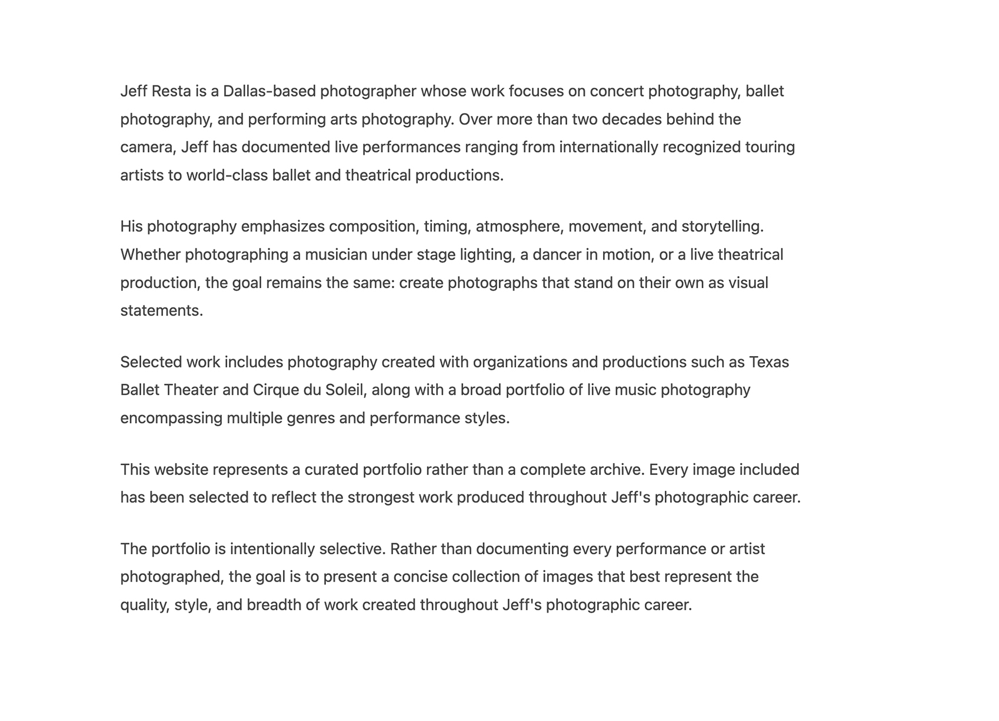

Jeff Resta is a Dallas-based photographer whose work focuses on concert photography, ballet photography, and performing arts photography.
Over more than two decades, Jeff has photographed internationally recognized musicians, touring productions, ballet companies, and theatrical performances. His work includes artists such as Roger Waters, Chris Cornell, Alicia Keys, Paramore, Soundgarden, Linkin Park, Billy Idol, Jeff Beck, and many others, along with productions from Texas Ballet Theater and Cirque du Soleil.
Jeff served as a house photographer for AEG Live at Nokia Theatre and Verizon Theatre, and as a house photographer for Texas Ballet Theater under Artistic Director Ben Stevenson. His work has also been published nationally through Examiner.com, including feature coverage focused on concert photography and ballet.
Working primarily in live performance environments, Jeff's photography focuses on capturing decisive moments of movement, atmosphere, and stage presence. Whether photographing a sold-out arena concert, a ballet performance, or a theatrical production, the goal remains the same: to create images that communicate the energy and emotion of a live performance through a single frame.
This website represents a curated portfolio rather than a complete archive. Each image has been selected to reflect the strongest work produced throughout Jeff's photographic career, including award-winning work recognized through a national photography competition for Chris Cornell's Songbook Tour.
Promoting Music & The Performing Arts through Photography & Media.